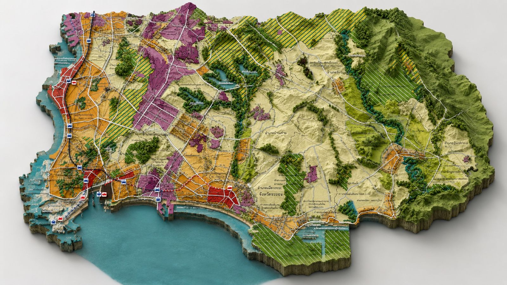

3D Digital Twin8 อำเภอ
ก้าวสู่เมืองแห่งอนาคตอย่างยั่งยืน
จังหวัดอัจฉริยะน่าอยู่ เศรษฐกิจเติบโตอย่างยั่งยืน ด้วยนวัตกรรม เทคโนโลยี และการมีส่วนร่วมของประชาชน

ที่มา: ข่าวกิจกรรมผู้บริหาร เว็บไซต์จังหวัดระยอง · ดูกิจกรรมทั้งหมด · ภาพ: สำนักงานจังหวัดระยอง
ศูนย์บัญชาการเมืองอัจฉริยะเชื่อมข้อมูลจากเซนเซอร์กว่า 5,000 จุดทั่วจังหวัด เพื่อการตัดสินใจที่แม่นยำและรวดเร็ว

หน่วย: บาท · ตัวเลขสีเขียวคืออัตราการเติบโตเทียบปีก่อน
บริการภาครัฐครบวงจรสำหรับประชาชนและผู้ประกอบการ ยื่นคำร้อง ชำระภาษี จองคิว และติดตามเรื่องได้ทุกที่ทุกเวลา
ทะเล เกาะ ป่าชายเลน และย่านเมืองเก่า ครบทั้ง 8 อำเภอ สำหรับนักเดินทางทุกสไตล์
ข่าวและประกาศล่าสุดจากสำนักงานจังหวัดระยองและสำนักงานประชาสัมพันธ์จังหวัดระยอง พร้อมประกาศประกวดราคาจากระบบข่าวประกวดราคาของจังหวัด
ภารกิจและการประชุมของผู้บริหารจังหวัดระยองเดือนตุลาคม 2569 จากเว็บไซต์จังหวัดระยอง เลือกวันที่ในปฏิทินเพื่อดูรายละเอียด
คลังข้อมูล เอกสารดาวน์โหลด ระบบสำนักงานอิเล็กทรอนิกส์ ศูนย์ดำรงธรรม และระบบสารสนเทศของจังหวัดระยอง ทุกลิงก์เชื่อมไปยังเว็บไซต์หน่วยงานราชการต้นทาง
ตรวจสอบลิงก์ทุกรายการเมื่อ 3 พ.ย. 2569
ติดตามความคืบหน้าโครงการพัฒนาเมืองภายใต้แผนพัฒนาจังหวัดระยอง พ.ศ. 2568–2578
ความคืบหน้าเป็นข้อมูลตัวอย่างเพื่อการนำเสนอ